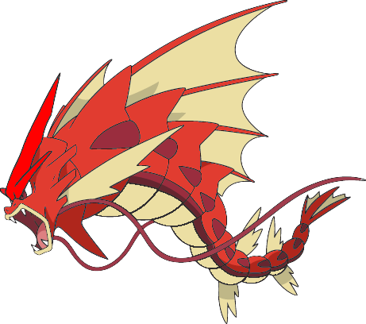
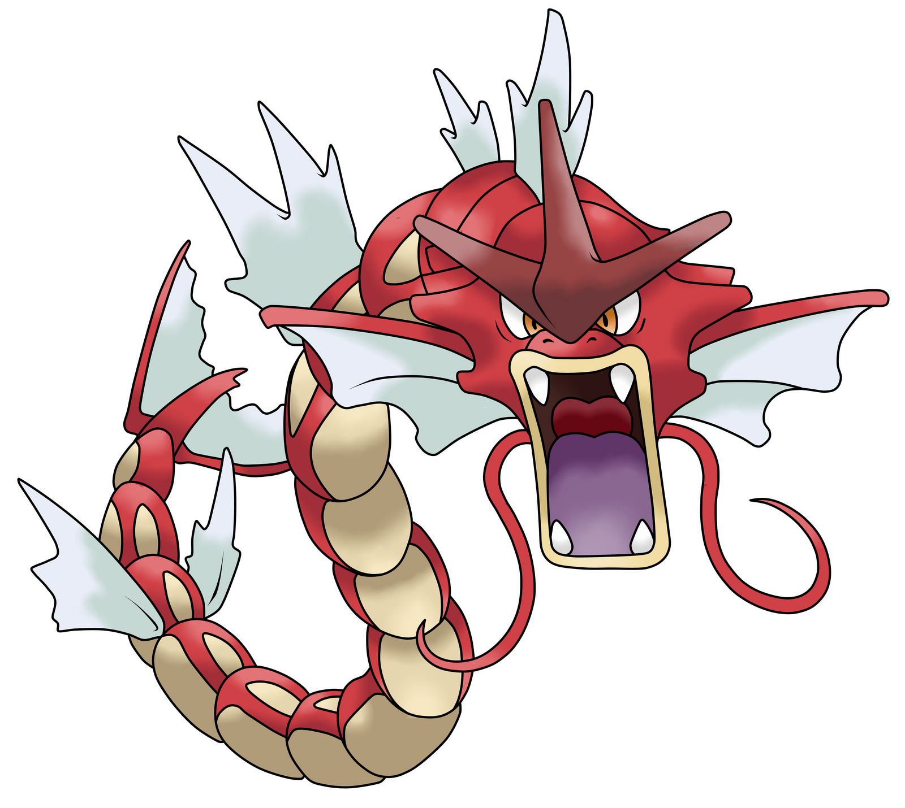
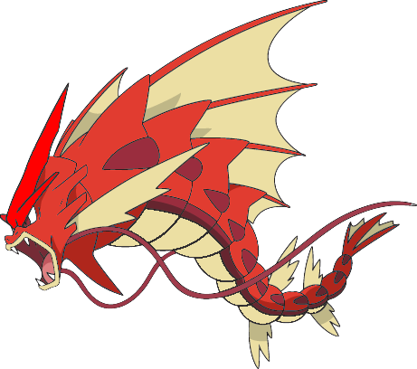
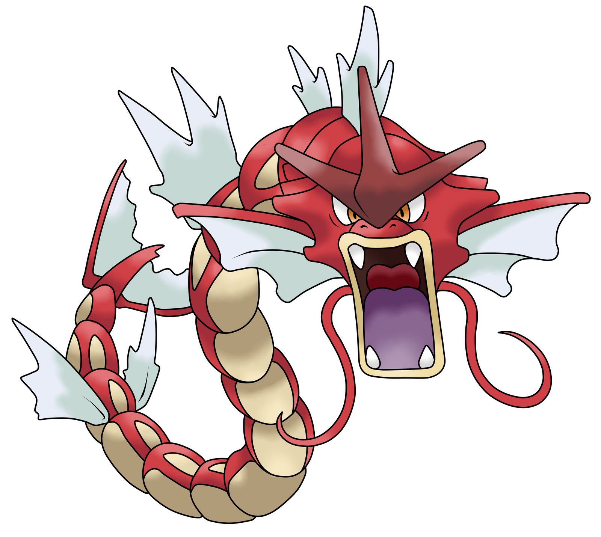
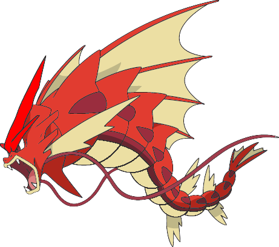
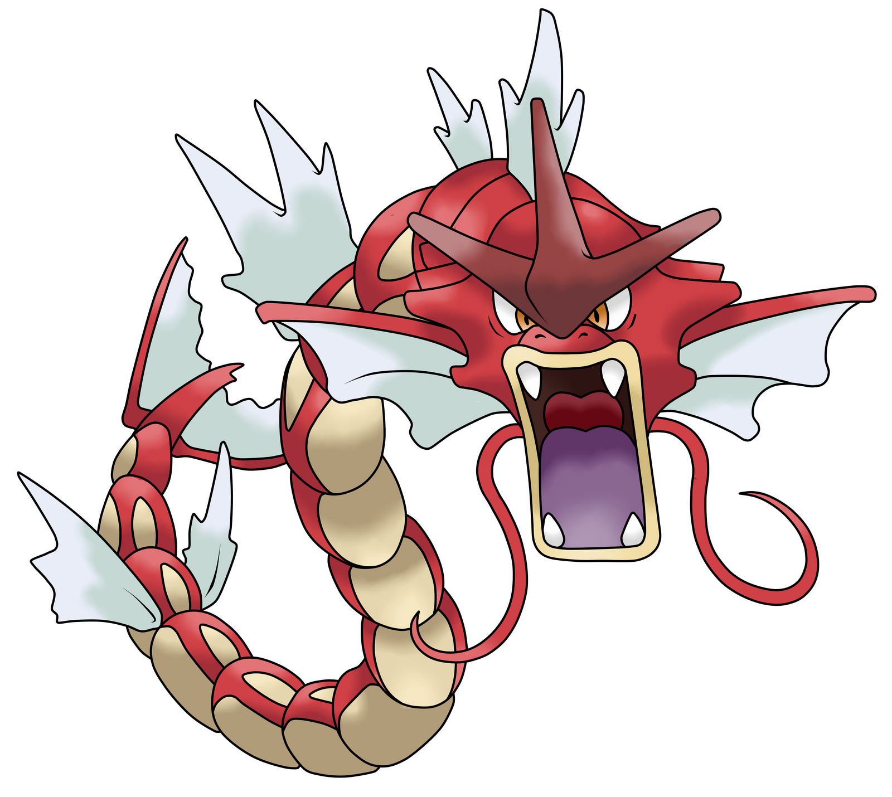

mein liblings Pokemon ist entweder shiny (mega) Glurak oder shiny (megaa) Garados
 



am anfang von jedem pokemon spiel ent scheidet man sich für eins von drei pokemon
Dies ist meine erste HTML-Seite.
Hi ich bin Nico und wer pokemon und mag der odr sie ist bei mir richtig ich habe einen eigenen

Meimer meinung nach denke ich es ist Rinoran ausschlisen können wir Arceus weil Arceus ist der pokemon got das wisen wir.
Ich libe pokemon. pokemon ist ein ganzes Uniwersum voller Abenteuer wunder und geheimnise
für die Menschen die hinter dem Mond leben und nicht wisen wer oder was Arceus ist ich sag es euch
Arceus ist ein legenderes pokemon genau gesagt der pokemon got er hat die pokemon erschafen. Aber nur im spiel in echt hat Satoshi Tajiri pokemon entwikelt
am anfang von jedem pokemon spiel ent scheidet man sich für eins von drei pokemon
mein liblings Pokemon ist entweder shiny (mega) Glurak oder shiny (megaa) Garados


Pokemon fang tutorial